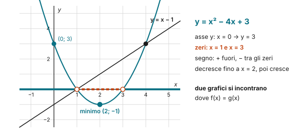
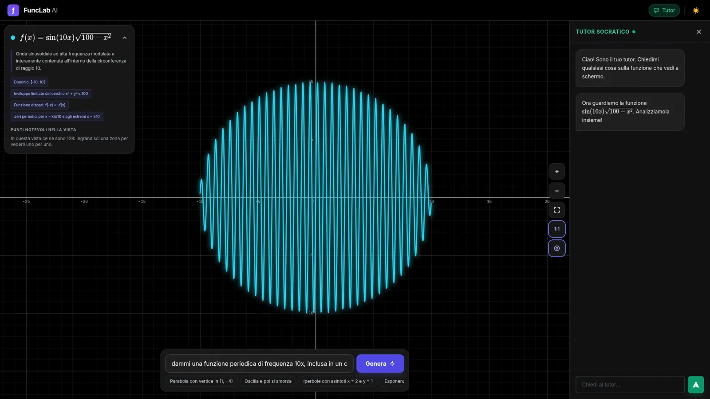

Lo studio di funzione con FuncLab: un'onda chiusa in un cerchio
Si chiede all'intelligenza artificiale "una funzione periodica di frequenza 10x, inclusa in un cerchio di raggio 10" e poi la si studia davvero: dominio, simmetria, zeri, inviluppo, con il tutor socratico.
Cosa è
FuncLab è un esploratore di funzioni con l'intelligenza artificiale: si descrive una funzione a parole, si preme Genera e la funzione compare sul piano, con una scheda che ne riassume le proprietà. Il piano si trascina e si ingrandisce con la rotella (con Shift solo l'asse $x$, con Alt solo l'asse $y$); un clic sulla curva fissa un punto. A destra c'è il tutor socratico: non dà le risposte, fa domande sulla funzione che si vede.
Che cos'è una funzione
Una funzione $f$ è una regola che a ogni numero $x$ di un insieme associa uno e un solo numero $y = f(x)$. Le due parole che contano sono "ogni" e "uno solo": una $x$ non può restare senza risposta, né averne due.
- Il dominio è l'insieme delle $x$ per cui la regola ha senso: per $\dfrac{1}{x}$ si esclude $0$, per $\sqrt{x}$ i numeri negativi.
- Il codominio è l'insieme in cui cerchiamo i risultati: per le funzioni della scuola, di solito tutti i numeri reali $\mathbb{R}$.
- L'immagine è l'insieme dei valori che la funzione raggiunge davvero: è contenuta nel codominio, ma spesso è più piccola.
Il grafico è l'insieme dei punti $(x;\ f(x))$: studiare una funzione vuol dire capire com'è fatto il grafico prima di disegnarlo.
Lo studio, passo per passo, su una parabola
Prendiamo $f(x) = x^2 - 4x + 3$.

- Dominio: è un polinomio, si può calcolare per ogni $x$: il dominio è $\mathbb{R}$.
- Intersezione con l'asse $y$: è il punto in cui $x = 0$. Si calcola $f(0) = 3$: il punto è $(0;\ 3)$.
- Intersezioni con l'asse $x$ (zeri): sono i punti in cui $y = 0$. Si risolve $x^2 - 4x + 3 = 0$, cioè $(x - 1)(x - 3) = 0$: gli zeri sono $x = 1$ e $x = 3$.
- Segno: dove il grafico sta sopra l'asse ($f(x) > 0$) e dove sotto ($f(x) < 0$). La parabola è rivolta verso l'alto, quindi è positiva per $x < 1$ oppure $x > 3$, negativa per $1 < x < 3$.
- Crescenza e decrescenza: una funzione è crescente in un intervallo se, prese due $x$ qualunque in quell'intervallo con $x_1 < x_2$, si ha $f(x_1) < f(x_2)$: andando verso destra il grafico sale. È decrescente se scende. Qui il vertice ha $x = -\dfrac{b}{2a} = 2$ e $f(2) = -1$: la funzione decresce per $x \leq 2$ e cresce per $x \geq 2$.
- Minimo e immagine: il punto più basso è il vertice $(2;\ -1)$, un minimo. La funzione raggiunge $-1$ e tutti i valori più grandi, ma nessuno più piccolo: l'immagine è $y \geq -1$, mentre il codominio resta $\mathbb{R}$.
Due grafici si incontrano dove hanno la stessa $y$: per la retta $y = x - 1$ si risolve $x^2 - 4x + 3 = x - 1$ e si trovano i punti $(1;\ 0)$ e $(4;\ 3)$.
Un'onda chiusa in un cerchio
In FuncLab abbiamo chiesto: "dammi una funzione periodica di frequenza 10x, inclusa in un cerchio di raggio 10". FuncLab ha proposto
$$f(x) = \sin(10x)\,\sqrt{100 - x^2}$$
e le stesse domande funzionano anche qui:
- Dominio: la radice esiste solo se $100 - x^2 \geq 0$, cioè $-10 \leq x \leq 10$.
- Immagine e inviluppo: $|\sin(10x)| \leq 1$, quindi $|f(x)| \leq \sqrt{100 - x^2}$, cioè $x^2 + y^2 \leq 100$: l'onda non esce mai dal cerchio di raggio 10, e l'immagine è contenuta tra $-10$ e $10$.
- Simmetria: il seno è dispari e la radice è pari, quindi $f(-x) = -f(x)$: la funzione è dispari.
- Zeri: dove $\sin(10x) = 0$, cioè $x = \dfrac{k\pi}{10}$, più gli estremi $x = \pm 10$.
- Periodo del seno: $\dfrac{2\pi}{10} = \dfrac{\pi}{5} \approx 0{,}63$: per questo le oscillazioni sono così fitte, e la crescenza cambia decine di volte.
È lo stesso percorso di Math Underground: una radice di indice pari decide il dominio, una funzione goniometrica porta la periodicità, e il prodotto eredita le proprietà di entrambe.
Il dialogo con il tutor

La scheda che FuncLab mette accanto al grafico riassume le proprietà: dominio $[-10, 10]$, inviluppo limitato dal cerchio $x^2 + y^2 \leq 100$, funzione dispari, zeri periodici per $x = \dfrac{k\pi}{10}$ e agli estremi $x = \pm 10$, e avverte che nella vista ci sono 128 punti notevoli: per vederli uno per uno bisogna ingrandire. Il tutor apre così:
Ciao! Sono il tuo tutor. Chiedimi qualsiasi cosa sulla funzione che vedi a schermo.
Ora guardiamo la funzione $\sin(10x)\sqrt{100 - x^2}$. Analizziamola insieme!
Da qui la parola passa alla classe: ogni proprietà della scheda è una domanda da fare al tutor, e una verifica da fare con i conti della sezione precedente.
Per prepararti alla verifica
- Lo studio di funzione segue sempre lo stesso ordine: tipo di funzione, dominio, simmetrie, intersezioni con gli assi, segno, asintoti, crescenza. Scrivilo come scaletta prima di cominciare.
- Usa FuncLab per controllare il tuo studio, non per farlo: prima i conti, poi il grafico.
- Attenzione: l'intelligenza artificiale può sbagliare una formula o una proprietà. Ogni affermazione della scheda di FuncLab si può verificare con un conto, come quelle qui sopra.
Prova tu. Studia $g(x) = \sqrt{9 - x^2}$: dominio, simmetria, intersezioni con gli assi. Che figura è il suo grafico?
Soluzione
Dominio: $9 - x^2 \geq 0$, cioè $-3 \leq x \leq 3$. È pari: $g(-x) = g(x)$. Asse $y$: $g(0) = 3$; zeri: $x = \pm 3$. Da $y = \sqrt{9 - x^2}$ si ha $x^2 + y^2 = 9$ con $y \geq 0$: è la semicirconferenza superiore di raggio 3.
Mettiti alla prova su carta
Verifiche dell'Archivio con esercizi sugli stessi temi. Prova a farle con carta e penna, senza l'app: è lì che si vede se hai capito.
- Verifica di marzo 2026: Studio di funzione, Classificazione e dominio, Funzioni, Dominio, Grafici, Retta, Polinomi, Elettricità Fila A · Fila B
- Verifica di marzo 2026: Equazioni di secondo grado e parabola, Equazioni, Grafici, Parabola, Retta, Polinomi Fila A · Fila B
- Verifica di ottobre 2025: Equazioni e sistemi lineari, Equazione della retta, Equazioni, Grafici, Retta Apri il PDF
Come usarla in classe
Alla LIM si fa scrivere alla classe la descrizione della funzione da chiedere, poi si studia insieme quella che FuncLab propone: la scheda di FuncLab diventa un elenco di affermazioni da verificare, una per una. Il tutor si può interrogare a turno, a voce alta, e la classe giudica se le sue domande portano avanti il ragionamento.
Per classificare la funzione prima di studiarla c'è Math Underground; per il segno della parabola, Parabola e disequazioni di secondo grado. Per allenarsi: Funzioni lineari, La parabola, Studio di funzione. La scheda da stampare raccoglie lo studio di funzione in sette passi.
A cosa fare attenzione
- La fiducia nell'AI: FuncLab disegna bene, ma la scheda che accompagna il grafico va verificata. È proprio lì il valore didattico.
- Le descrizioni ambigue: "frequenza 10x" si può leggere in modi diversi. Chiedere alla classe che cosa intendeva è già matematica.
- La connessione: FuncLab gira su Google AI Studio e ha bisogno della rete.